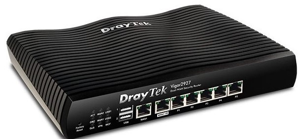
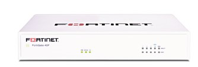
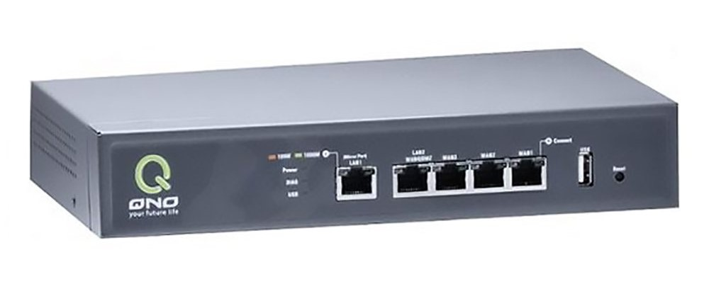
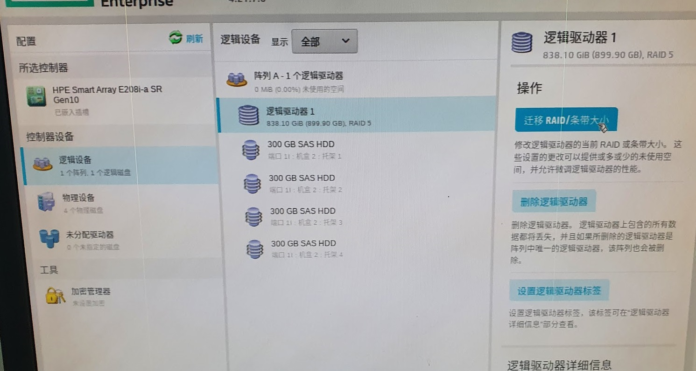
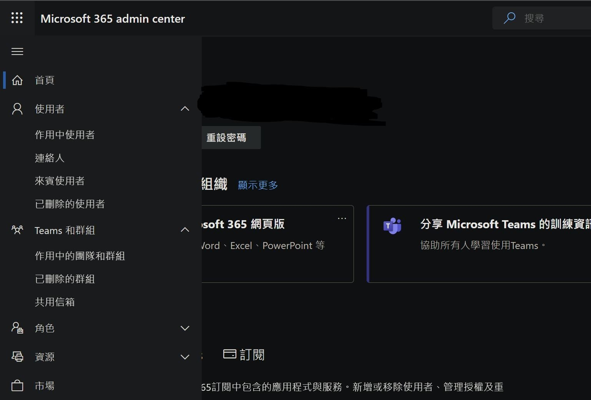
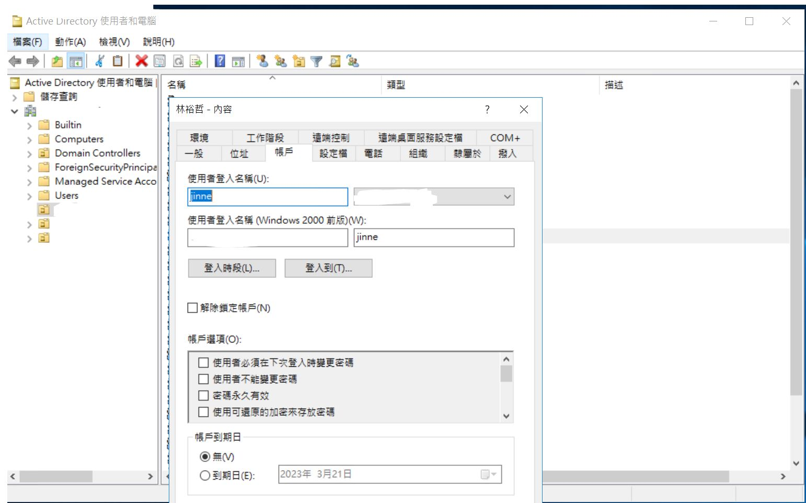
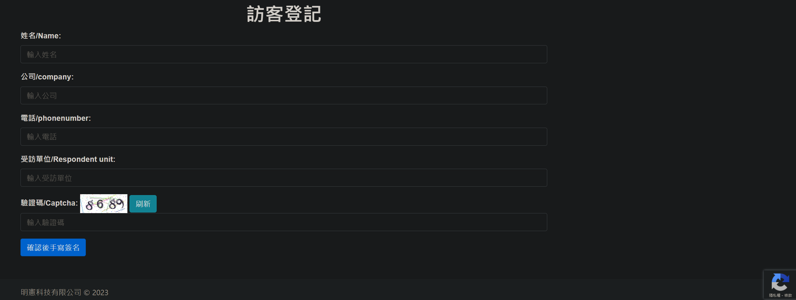
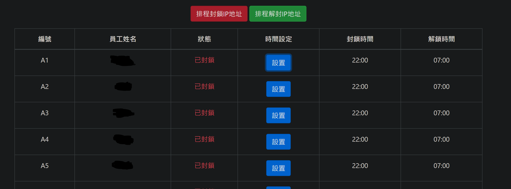
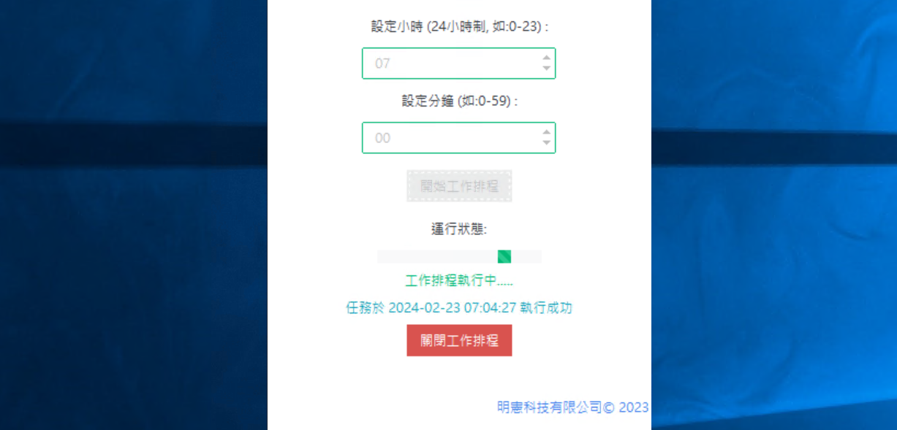

資訊工程師
資訊相關維護與開發
負責電腦與伺服器硬體維修、作業系統與應用軟體安裝設定，以及網路設備、儲存裝置、列印設備與辦公軟體等技術支援與故障排除。
2020/12 — 至今
資訊工程師｜系統維運／網路設備／資安設定
1995 年生，台南人。高中就讀資訊科，具備基本電學與電路基礎；大學後期投入程式開發，並於研究所持續研究電腦與通訊相關領域。
目前主要負責企業資訊維運，範圍包含電腦／伺服器硬體、作業系統與應用軟體、網路設備、儲存與列印設備，以及防火牆、AD、NAS 等設定與故障排除。
負責電腦與伺服器硬體維修、作業系統與應用軟體安裝設定，以及網路設備、儲存裝置、列印設備與辦公軟體等技術支援與故障排除。
管理研究計畫行政與經費核銷、物品建檔；測試並開發 NB-IoT、工業級感測器等物聯網實驗設備。
測試 Raspberry Pi、Arduino 等感測與開發板，開發使用者網頁介面，並與團隊同步進度、完成計畫成果。
協助指導 ESP8266、電路實作與網頁介面等課程內容，並於課後進行一對一輔導。

路由策略、Lan to Lan、基本網路、防火牆規則、NAT 轉埠。

路由策略、Lan to Lan、基本網路、防火牆規則、NAT 轉埠。

路由策略、Lan to Lan、基本網路、防火牆規則、NAT 轉埠。

SAS 硬碟陣列建置，並安裝 Windows Server 2019。

商務版帳號授權管理與 Outlook 相關設置。

使用者帳號維護與電腦原則套用。

登記資料匯入 Excel，並以 Line 發送通知。

控管 ERP、NAS 存取，搭配 Windows 排程執行。

Excel 匯入 Word 樣板後轉 PDF，並以郵件寄送客戶。
研究所畢業後於民國 109 年 7 月退伍。對程式開發有基礎認識，工作上更著重電腦軟硬體、系統維運與現場排除。
目前任職資訊公司，處理 Windows Server 維護、弱電與印表機設定、客戶端軟硬體需求，並兼顧客戶外勤支援。